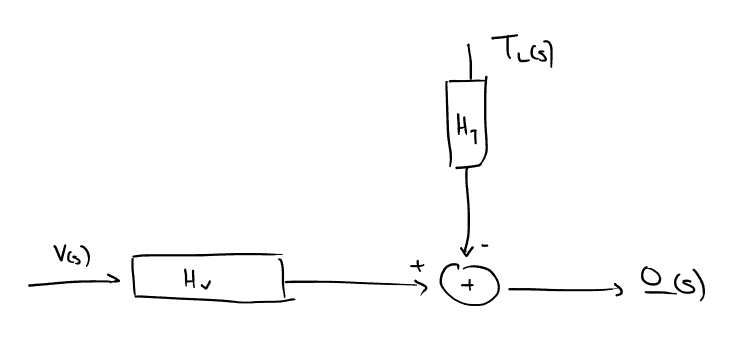

1ο Εργαστήριο
Table of Contents
Μερικά γενικά tips από το εργαστήριο:
- Βάζοντας semicolon (;) στο τέλος ενός statement το output του δεν φαίνεται στο cli του Matlab
- Αυτό το εργαστήριο είνα μελέτη (αποκλειστικά) open loop. Στο επόμενο θα κλείσουμε τον βρόχο και θα μοντελοποιήσουμε/προσθέσουμε ελεγκτές και συγκριτές, θέτοντας παράλληλα και προδιαγραφές
Σε όλες τις σημειώσεις έχω χρησιμοποιήσει source blocks του octave γιατί εκείνο τρέχω/έχω εγκατεστημένο στο workstation μου. Προφανώς το εργαστήριο πραγματοποιήθηκε σε Matlab.
Ακόμα στην πραγματικότητα ο κώδικας εδώ δεν θα δούλευε σε octave λόγω προβλήματος με τα εμπλεκόμενα packages.
Το σύστημα
Η μοντελοποίηση του συστήματος είναι της μορφής: 
όπου αφαιρετικά η μία είσοδος είναι η τάση και αποτελεί την είσοδο ελέγχου ενώ η δεύτερη είσοδος, απόρροια της φύσης του κινητήρα, είναι στην πραγματικότητα η ροπή.
Οι τύποι των δύο συναρτήσεων μεταφοράς \(H_v,H_t\) είναι
\begin{align} \label{eq:1} H_v&= \frac{K_m}{(R_a+sL_a)(sJ+B)+KK_m}= \frac{8000}{s^2+440.1s+5164}\\ H_t&= \frac{-(R_a+sL_a)}{(R_a+sL_a)(sJ+B)+KK_m} = \frac{-1250(s+440)}{s^2+440.1s+5164} \end{align}Στην ανάλυση που θα πραγματοποιήσουμε θέλουμε να αναπαραστήσουμε γραφικά την έξοδο του συστήματος με διάφορες τιμές εισόδων, δίνοντας μας μια καλύτερη εικόνα για την συμπεριφορά του.
Θέσιμο παραμέτρων
Οταν φτιάχνεις array με συντελεστές πολυωνύμου προσέχεις να εισάγεις όλους τους όρους, ακόμα και εκείνους που φαινομενικά παραλείπονται.
Αρχικά φτιάχνουμε την συνάρτηση μεταφοράς της \(V\). Το o είναι εκεί για original,
αποκτά σημασία πιο κάτω.
nVo = 8000; dVo = [ 1 440.1 5164]; % tf > construct transfer func HVo = tf(nVo,dVo);
Με τον ίδιο τρόπο την συνάρτηση μεταφοράς της \(T\)
nTo = [1250 440*(-1250)]; dTo = dVo; HTo = tf(nTo,dTo);
Ευστάθεια συστήματος
Με την παρακάτω συνάρτηση μπορούμε να πάρουμε τις ρίζες ενός πολυωνύμου
% roots -> rizes polyonymou p = roots(dVo);
το οποίο στην προκειμένη μας δείχνει οτι το σύστημα ευσταθές, με δύο αρνητικούς και πραγματικούς πόλους1. Ο ένας (κοντά στο 0) λέγεται αργός πόλος και καθορίζει την συμπεριφορά της συνάρτησης μεταφοράς μακροπρόθεσμα, ενώ ο δεύτερος είναι υπεύθυνος για την γρήγορη/μεταβατική απόκριση
DC Gain
Για την ενίσχυση στο Steady State (δηλαδή το dc-gain) ισχύει:
\begin{equation} \label{eq:2} \text{DCGain} = H(0) \end{equation}dcHVo = dcgain(HVo); % to arnitiko htan leei anamenomeno logo ths fysews tou TL kinitira dcTVo = dcgain(HTo);
Plotting με step function
Μπορούμε να δούμε την απόκριση του συστήματος μας αν για είσοδο είχε ένα step function μέσω των παρακάτω εντολών:
step(HVo) step(HTo)
Θεωρητικά σχόλια
- Παρατηρούμε πως το unit step (κατά την διάρκεια του) μας επιτρέπει να φτάσουμε την ss κατάσταση του συστήματος
- Από το γράφημα που προκύπτει:
- Μπορείς να βάλεις να δεις τα
rise time,settle time
- Μπορείς να βάλεις να δεις τα
Προσέγγιση
Μπορούμε να προσεγγίσουμε την συμπεριφορά του συστήματος αφαιρώντας τον πόλο μα κρατώντας την θέση του (αυτό οφείλεται στο οτι το μεταβατικό φεύγει γρήγορα)
HV = tf(18.69, [1 12.064]); HT = tf([-2.92 -2.92*440], [1 12.064]);
Και μπορούμε να δούμε πάλι την προσέγγιση
step(HV)
LSIN
t = 0 : 0.001 : 0.7; uV = 150*stepfun(t,0); yV1 = lsim(HVo,uV,t); yV2 = lsim(HV,uV,t); %step(HVo) plot(t,yV1,t,yV2);
Επίδραση φορτίου στην απόκριση στροφών
uV=150*stepfun(t,0); uT1=0.5*stepfun(t,0); uT2=1.0*stepfun(t,0); uT3=1.5*stepfun(t,0); yV=lsim(HV, uV, t); yT1=lsim(HT, uT1, t); yT2=lsim(HT, uT2, t); yT3=lsim(HT, uT3, t); y1=yV+yT1; y2=yV+yT2; y3=yV+yT3; plot(t, y1, t,y2, t, y3)
Footnotes:
Δηλώθηκε οτι αυτό ήταν αναμενόμενο καθώς εξετάζαμε RL, παθητικό κύκλωμα, μα σε αυτή την φάση δεν μπορώ να το εξηγήσω περισσότερο.